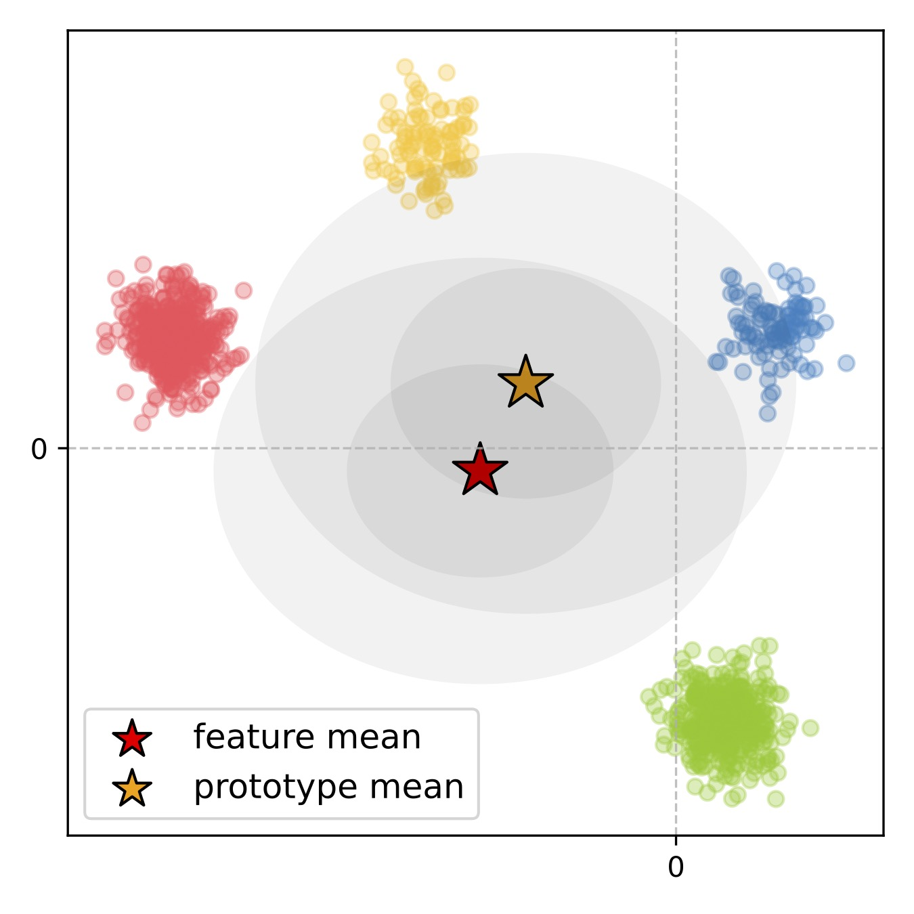
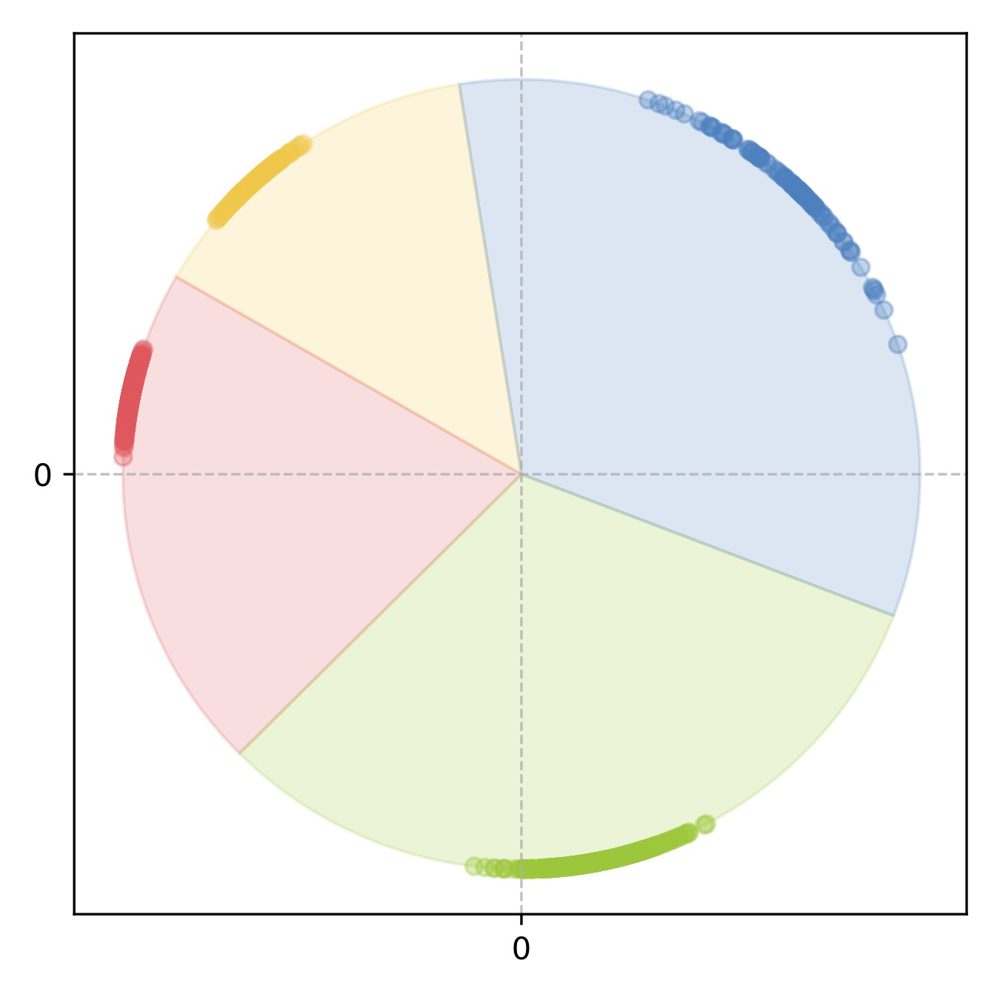
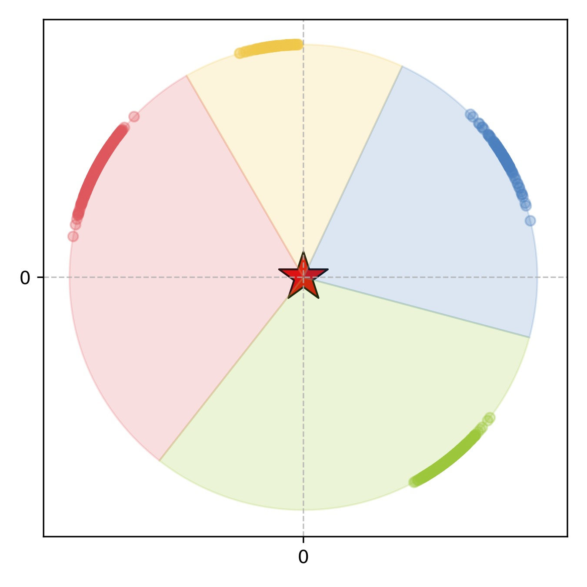
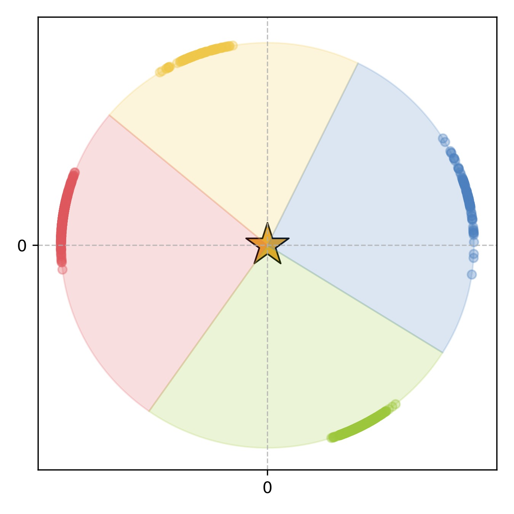
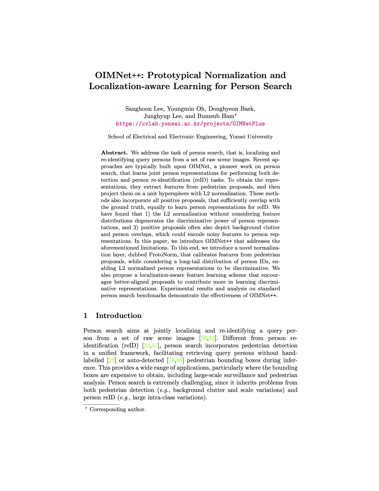

|  |  |  |  |
We address the task of person search, that is, localizing and re-identifying query persons from a set of raw scene images. Recent approaches are typically built upon OIMNet, a pioneer work on person search, that learns joint person representations for performing both detection and person re-identification (reID) tasks. To obtain the representations, they extract features from pedestrian proposals, and then project them on a unit hypersphere with L2 normalization. These methods also incorporate all positive proposals, that sufficiently overlap with the ground truth, equally to learn person representations for reID. We have found that 1) the L2 normalization without considering feature distributions degenerates the discriminative power of person representations, and 2) positive proposals often also depict background clutter and person overlaps, which could encode noisy features to person representations. In this paper, we introduce OIMNet++ that addresses the aforementioned limitations. To this end, we introduce a novel normalization layer, dubbed ProtoNorm, that calibrates features from pedestrian proposals, while considering a long-tail distribution of person IDs, enabling L2 normalized person representations to be discriminative. We also propose a localization-aware feature learning scheme that encourages better-aligned proposals to contribute more in learning discriminative representations. Experimental results and analysis on standard person search benchmarks demonstrate the effectiveness of OIMNet++.
An overview of OIMNet++. Similar to OIMNet, OIMNet++ mainly consists of three parts: An RPN with a stem network, a reID head, and a projection module. The main differences between OIMNet++ (bottom) and OIMNet (top) are the projection module and the training loss. We incorporate a ProtoNorm layer to explicitly standardize features prior to L2 normalization, while considering the class imbalance problem in person search. We also exploit the LOIM loss that leverages localization accuracies of object proposals to learn discriminative features. See our paper for more details.
Left: A comparison between BatchNorm and ProtoNorm. BatchNorm computes feature statistics with input features directly. On the other hand, ProtoNorm aggregates multiple features with the same ID into a single prototype. ProtoNorm then computes mean and variance based on the prototype features, alleviating the bias towards dominant IDs. Right: LUT update scheme within the LOIM loss. The vanilla OIM loss assigns equal momentum values for all positive proposals, regardless of the localization qualities. The LOIM loss, instead, assigns an adaptive momentum value to each proposal w.r.t its IoU with the ground truth. Thicker arrows indicate larger degree of updates to the LUT. See our paper for more details.
|  |
S. Lee, Y. Oh, D. Baek, J. Lee, B. Ham OIMNet++: Prototypical Normalization and Localization-aware Learning for Person Search In Proceedings of European Conference on Computer Vision (ECCV), 2022 |